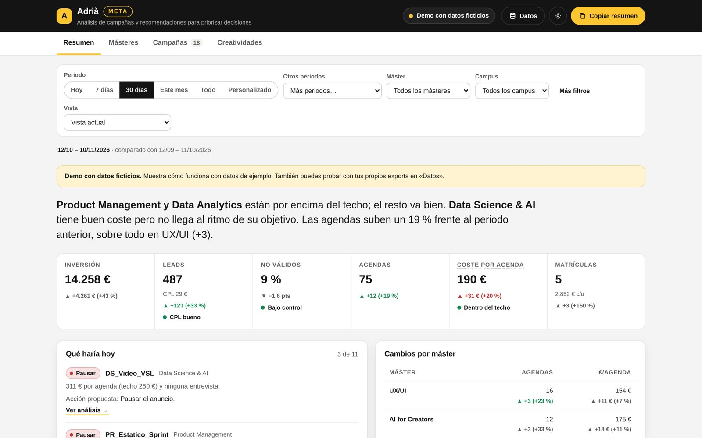

Panel web · Meta Ads + CRM
Adrià META
Cruza los datos de Meta Ads con los del CRM y propone qué escalar, vigilar o pausar.
- Necesidad
- Para decidir qué campañas pausar o escalar tenía que cruzar a mano los datos de Meta (gasto, CPL, frecuencia) con los de Power BI (leads, agendas y matrículas).
- Qué hice
- Un panel que cruza los dos exports por ID de anuncio, aplica reglas de decisión (CPL, coste por agenda, días activos, fatiga de la creatividad) y propone acciones a nivel de campaña, conjunto y anuncio. También guarda las decisiones tomadas y su seguimiento.
- Cómo lo comprobé
- Lo probé con exports reales: los totales cuadraban por semana y por campus, el cruce no duplicaba datos y se ve bien en móvil.
Abrir demo
Datos ficticios · Empieza por Qué haría hoy → Ver análisis